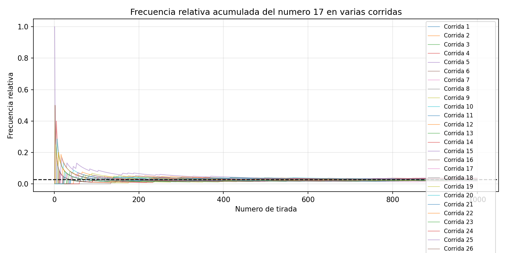
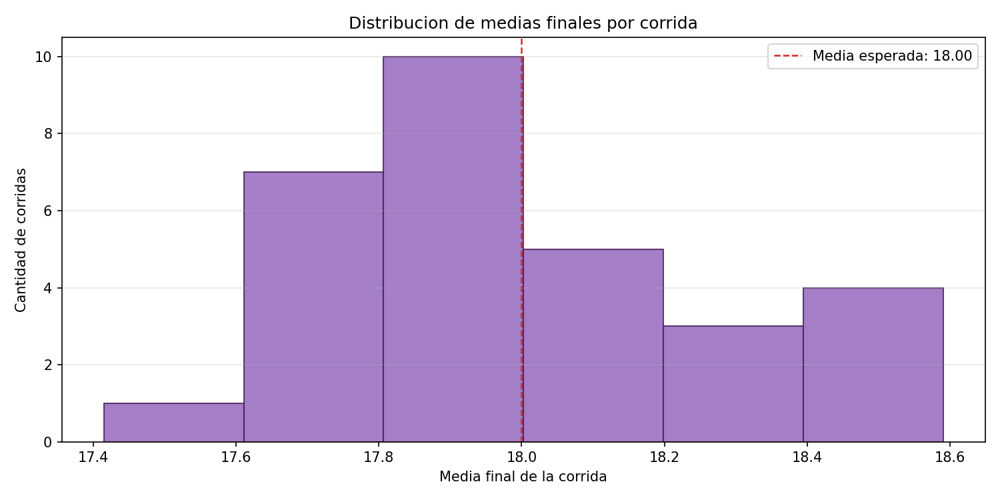
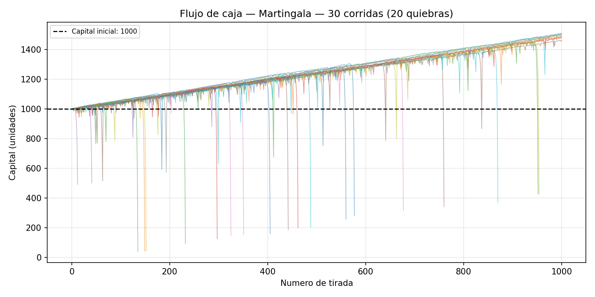
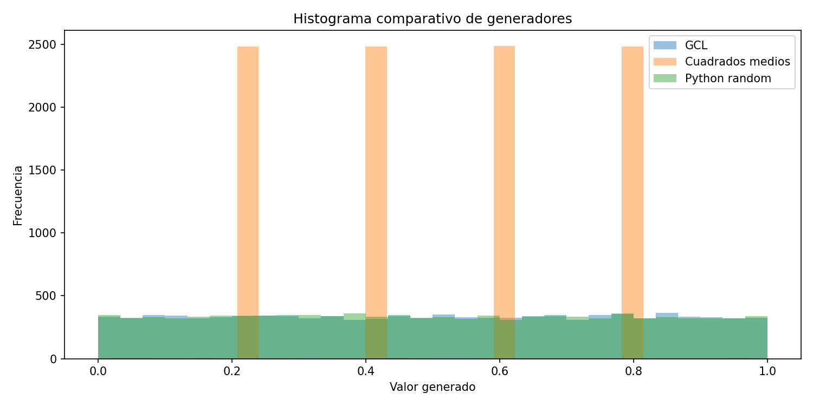
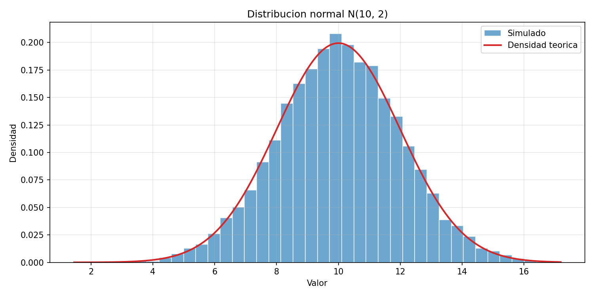
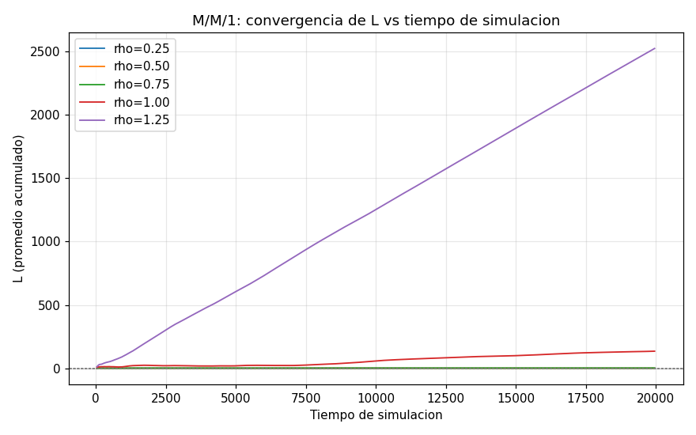
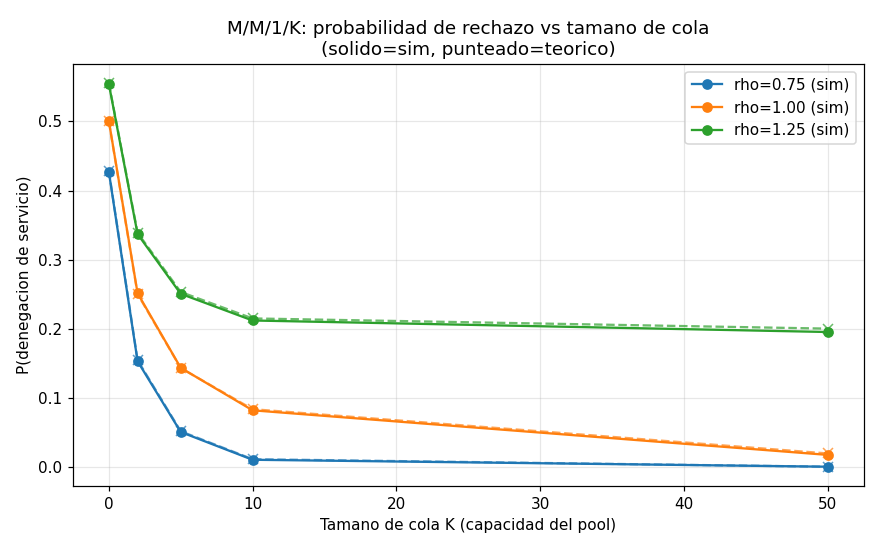
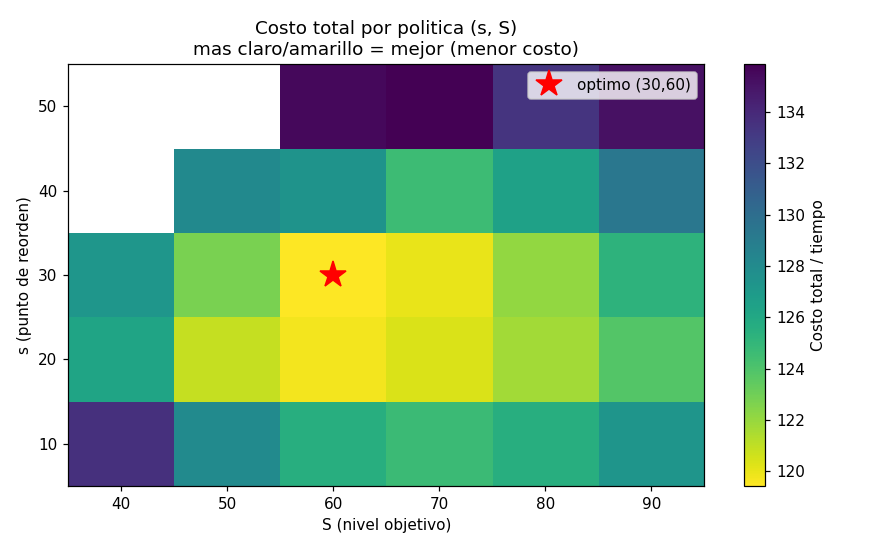
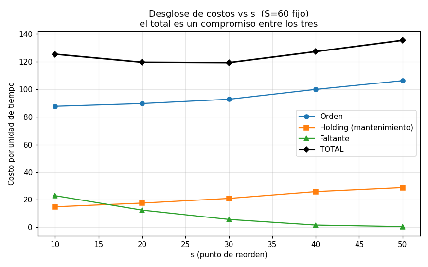

Simulación · UTN FRRO · 2026 · TP 1.1 a TP 3
Defensa de los TPs de práctica
Qué hicimos en cada TP, qué números hay que tener en la cabeza, qué mostrar y qué nos pueden marcar.
El hilo que une los cinco TPs (para arrancar la defensa)
Primero simulamos el azar con una ruleta. Después apostamos sobre ella y vimos que la casa siempre gana. Después aprendimos a fabricar el azar (generadores de U(0,1)) y a darle forma (distribuciones). Al final usamos todo eso para mover modelos de eventos discretos (colas e inventario). Los cinco siguen el mismo patrón: lo simulado se compara contra lo teórico, con varias corridas independientes.
Cómo leer esta guía
Cada TP arranca con el resumen en criollo (la versión para contarlo en 30 segundos). Después vienen lo que pedía la consigna, lo que hicimos y los números clave.
Recuadros rojos
Lo que el informe no muestra o tiene mal. Conviene conocerlo antes de que lo marquen, con la respuesta preparada.
fuera del informe
Explicaciones que no están en los informes ni en las consignas: son contexto agregado para poder defenderlos.
1.1
Bloque 1 · Simular el azar
Simulación de una ruleta
qué hicimos
Hicimos una ruleta en Python que tira números del 0 al 36 y miramos cómo se comportan las cuentas tirada a tirada. Al principio es un caos: el 17 sale dos veces seguidas o no sale nunca. Con mil tiradas todo se acomoda a lo que dice la teoría: cada número sale 1 de cada 37 veces y el promedio da 18. Y si repetís el experimento 30 veces, los 30 promedios quedan amontonados alrededor de 18, en forma de campana. Es la
ley de los grandes números y el
teorema central del límite, vistos con los ojos.
Programa en Python: python programa.py -c XXX -n YYY -e ZZ (corridas, tiradas, número elegido).
Cuatro gráficas de una corrida contra su valor esperado: frecuencia relativa, promedio, desvío y varianza.
Varias corridas en gráficas simultáneas, con la cantidad justificada (mínimo 8 gráficas).
Justificar con la teoría (TCL, estadísticos) e informe en LaTeX con formato de paper.
Una ruleta europea tiene 37 casilleros (del 0 al 36). Cada tirada es una uniforme discreta, generada con random.randint(0, 36). Se corrió con c = 30 corridas, n = 1000 tiradas y el número e = 17.
Tirada a tirada, y en forma acumulada, el programa calcula la frecuencia absoluta y relativa del 17, la media, la varianza y el desvío. Sin NumPy: son bucles explícitos.
| Estadístico | Teórico |
|---|
| P(X = 17) | 1/37 ≈ 0,027 |
| Media μ | 18 |
| Varianza σ² | (37² − 1)/12 ≈ 114,33 |
| Desvío σ | ≈ 10,69 |
| Error estándar (n = 1000) | σ/√n ≈ 0,338 |
3
Resultados: dos teoremas, dos escalas
Dentro de cada corrida → ley de los grandes números
Los estadísticos arrancan muy volátiles: la frecuencia relativa llega a 0,14, la media arranca en ≈ 31 y la varianza pica en ≈ 190. A partir de las 300 o 400 tiradas se estabilizan cerca del valor teórico.
Entre corridas → teorema central del límite
Las 30 medias finales caen entre 17,4 y 18,6, dentro del 18 ± 2σ/√n = 18 ± 0,676 que predice el TCL, y su histograma tiene forma de campana.
Extra: sobre las 30 000 tiradas, los 37 números quedan con frecuencias entre 0,025 y 0,029. El generador de Python se comporta como uniforme.
Mostrar: el embudo

Frecuencia relativa del 17 en las 30 corridas: arrancan dispersas y terminan pegadas a 1/37.
Mostrar: la campana

Histograma de las 30 medias finales, centrado en 18. Con estas dos gráficas se cuentan los dos teoremas.
falta la gráfica del desvío
La consigna pide el
desvío contra n y el informe no lo grafica (tiene frecuencia absoluta, relativa, media y varianza). El mínimo de 8 gráficas sí se cumple (hay 9).
Respuesta: el desvío es la raíz de la varianza, así que converge igual que ella, a 10,69.
el orden de convergencia está contradicho
El informe dice que converge primero la media (n ≈ 200), después la frecuencia relativa (n ≈ 400) y "finalmente" la varianza, pero a la varianza le asigna n ≈ 300. Medido en error relativo, el orden real es
media → varianza → frecuencia relativa. Con n = 1000 la media tiene ≈ 1,9 % de error, la varianza ≈ 2,8 % y la frecuencia de un número puntual ≈ 19 %, porque p = 1/37 es muy chica.
fuera del informe
Preguntas probables · TP 1.1
¿Por qué 30 corridas y no una sola muy larga?
Una corrida larga muestra la convergencia (ley de los grandes números). Varias corridas independientes muestran cuánto varía el resultado de una réplica a otra y permiten armar un intervalo de confianza (TCL).
¿Cuál es la diferencia entre la ley de los grandes números y el TCL?
La ley dice
a dónde va el promedio: al valor esperado. El TCL dice
cómo se reparten los promedios alrededor de ese valor: en forma normal, con desvío σ/√n.
¿Por qué la frecuencia del 17 tarda tanto en estabilizarse?
Porque es un evento raro (p = 1/37). Su error relativo es mucho más grande que el de la media, que usa la información de todas las tiradas.
1.2
Bloque 1 · Simular el azar
Estrategias de apuesta: ¿se le puede ganar a la casa?
qué hicimos
Agarramos la ruleta del 1.1 y nos pusimos a apostar con las "estrategias para ganarle al casino" que andan por internet: Martingala (duplicar cuando perdés), D'Alembert (subir de a uno), Fibonacci (seguir la sucesión) y la de Winograd, el argentino que hizo saltar la banca en Mar del Plata. Conclusión:
ninguna le gana a la casa. Por culpa del cero, cada peso apostado pierde en promedio 2,7 centavos, y eso no lo cambia ninguna estrategia: solo cambia
cuándo y cómo perdés. Con plata limitada, la Martingala te funde en 2 de cada 3 sesiones.
Simular las apuestas siguiendo el flujo de caja y explicar los pagos (color, fila, número).
Martingala, D'Alembert, Fibonacci y una estrategia elegida por el grupo, con fuentes.
Cada una con capital infinito y con capital acotado; en el acotado, contar las quiebras.
Parámetros nuevos -s (m, d, f, o) y -a (i, f); al menos 3 gráficas por estrategia.
2
La idea central (hay que decirla sí o sí)
En chance simple (rojo/negro, par/impar) hay 18 números que ganan y 19 que pierden, contando el cero:
E = a · 18/37 − a · 19/37 = −a/37 ≈ −0,027 · a
Cada apuesta pierde en promedio 1/37 de lo apostado, sea cual sea la estrategia. Las estrategias cambian cuánto y cuándo se apuesta, no el signo de la esperanza.
30 corridas de 1000 tiradas con semilla 42. Capital finito: C₀ = 1000, apuesta mínima 1. Martingala, D'Alembert y Fibonacci apuestan a chance simple (paga 1 a 1); Winograd pone una ficha a cada número del 22 al 36 en todas las tiradas. Hay además una página web en Flask para correrlo desde el navegador.
| Estrategia | Regla | Capital ∞ (media) | Capital finito (media) | Quiebras |
|---|
| Martingala | pierde → duplica; gana → vuelve a 1 | +472,07 | −342,60 | 20/30 |
| D'Alembert | pierde → +1; gana → −1 | −737,87 | −501,53 | 17/30 |
| Winograd | una ficha del 22 al 36 (15 por tirada) | −416,40 | −415,00 | 10/30 |
| Fibonacci | pierde → avanza 1; gana → retrocede 2 | +167,57 | −17,00 | 5/30 |
Quiebras con capital finito: siguen a lo agresiva que es la progresión
Martingala66,7 % · crece exponencial
D'Alembert56,7 % · crece lineal
Winograd33,3 % · apuesta fija
Fibonacci16,7 % · la más lenta
Martingala aguanta solo 9 pérdidas seguidas
1 + 2 + … + 256 = 511. La décima apuesta (512) ya no entra en los 1000. En 1000 tiradas, una racha así es esperable.
Winograd sirve para validar el modelo
Apuesta fija, así que se puede calcular a mano. Teoría: 21·15/37 − 15·22/37 = −15/37 ≈ −0,405 por tirada →
−405,4 en 1000 tiradas. Simulación:
−416,4. Coinciden.
Mostrar: Martingala con capital finito

La escalera sube +1 por ciclo ganado y cae a pique cuando llega la racha larga (20 quiebras en 30). Esa sola gráfica resume el TP.
diferencias menores con la consigna
- La gráfica de barras muestra la ganancia en plata de cada tirada, no la "frecuencia relativa de obtener la apuesta favorable" del boceto.
- La estrategia propia se elige con
-s w, no con -s o.
- No hay tabla de pagos por tipo de apuesta: solo aparecen chance simple (1 a 1) y pleno (35 a 1).
Lo central sí está: las cuatro estrategias, los dos tipos de capital, las quiebras y las 3 gráficas por estrategia.
Preguntas probables · TP 1.2
Si la esperanza es negativa, ¿por qué la Martingala "gana" +472 con capital infinito?
Porque el resultado es muy asimétrico. Casi todas las corridas ganan ≈ +1 por ciclo (unas +480 en 1000 tiradas), y una fracción minúscula pierde fortunas: una racha de 20 pérdidas cuesta ≈ 2²⁰, un millón. Con 30 corridas ese caso casi nunca aparece, y por eso la media muestral sale positiva. Lo mismo vale para el +167 de Fibonacci.
fuera del informe¿Por qué D'Alembert pierde más con capital infinito que con finito?
Con capital finito la corrida se corta al quebrar, y la pérdida queda acotada por los 1000 iniciales. Con capital infinito sigue apostando montos crecientes y la pérdida no tiene techo.
¿Qué hace el cero?
Es el casillero que no es ni rojo ni negro: hace que perder (19/37) sea un poco más probable que ganar (18/37). De ahí sale toda la ventaja de la casa.
2.1
Bloque 2 · Fabricar el azar
Generadores pseudoaleatorios y cómo se testean
qué hicimos
La compu no puede tirar dados: los números "al azar" salen de una fórmula que, arrancando de una semilla, siempre da la misma secuencia. Programamos dos de esas fórmulas (el GCL y los cuadrados medios de von Neumann), las comparamos con la de Python y las pasamos por
seis pruebas para ver si los números parecen azar de verdad. El GCL y el de Python aprueban todo. Cuadrados medios, al rato de arrancar,
se queda trabado repitiendo los mismos cuatro números, y las pruebas lo agarran.
Investigar generadores reales y pseudoaleatorios y los tests para evaluarlos. Programar al menos dos generadores, uno de ellos un GCL, y testear el GCL con al menos cuatro pruebas. Compararlos con el de Python, idealmente en una tabla.
2
Los tres generadores (n = 10 000, semilla 5731)
GCL (congruencial lineal mixto)
Xᵢ₊₁ = (a·Xᵢ + c) mod m · Uᵢ = Xᵢ/m
a = 1 103 515 245 · c = 12 345 · m = 2³¹
Cuadrados medios (von Neumann)
Se eleva el número al cuadrado y se toman los 4 dígitos del centro como el siguiente.
Python random.random()
Mersenne Twister. Lo usamos como referencia de un generador bueno.
| Test (aprueba si…) | Qué mira | GCL | Cuad. medios | Python |
|---|
| Media (Z < 1,96) | que el promedio dé 0,5 | 0,044 ✓ | 3,32 ✗ | 0,886 ✓ |
| Varianza (Z < 1,96) | que la varianza dé 1/12 | 0,017 ✓ | 27,99 ✗ | 0,240 ✓ |
| χ², 10 intervalos (< 16,919) | que cada intervalo tenga el 10 % | 3,15 ✓ | 14 795 ✗ | 4,70 ✓ |
| Kolmogorov-Smirnov (< 0,0136) | que la acumulada sea la de U(0,1) | 0,0049 ✓ | 0,2078 ✗ | 0,0090 ✓ |
| Corridas arriba/abajo de 0,5 | que no haya rachas raras | 0,997 ✓ | 0,060 ✓ | 0,434 ✓ |
| Autocorrelación de lag 1 | que un valor no anticipe al siguiente | 1,259 ✓ | 0,182 ✓ | 0,121 ✓ |
◎
El GCL y Python pasan los seis tests. Cuadrados medios falla los cuatro que miran la distribución (media, varianza, χ² y KS).
4
Por qué falla cuadrados medios fuera del informe · verificado corriendo el código
Con semilla 5731, en el paso 71 cae en este ciclo y no sale más:
6100→2100→4100→8100↺ vuelve a 6100
6100² = 37210000 → 2100 · 2100² = 04410000 → 4100 · …
De los 10 000 valores, solo 75 son distintos; el resto repite 0,61 / 0,21 / 0,41 / 0,81. Eso explica toda la tabla:
- χ² y KS enormes: el 99 % de los valores cae en 4 de los 10 intervalos.
- Media rechazada: el ciclo promedia 0,51 en vez de 0,50.
- Pasa corridas y autocorrelación de casualidad: el ciclo queda arriba, abajo, abajo, arriba de 0,5 (justo lo que se espera del azar) y su autocorrelación de lag 1 da exactamente 0.
Mostrar: el histograma

Las cuatro barras de cuadrados medios son el TP: casi todo cae en cuatro valores.
La moraleja
Cada test mira
una sola propiedad. Por eso se aplica una batería de tests y no uno suelto: un generador roto puede aprobar algunos de casualidad.
Preguntas probables · TP 2.1
¿Qué hace que el GCL tenga período completo?
El teorema del GCL mixto (Unidad 7.4 de la wiki): c y m coprimos, a − 1 divisible por todos los primos de m, y por 4 si 4 divide a m. Con m = 2³¹, c impar y a − 1 múltiplo de 4, el período es
2³¹. Son los parámetros del
rand() de ANSI C.
¿El GCL tiene alguna debilidad?
Sí: sus bits bajos tienen período corto, y en varias dimensiones los puntos caen sobre hiperplanos. Para este TP no molesta.
fuera del informe¿Pseudoaleatorio no es un defecto?
Al contrario: que la secuencia sea reproducible con la misma semilla permite repetir un experimento y comparar escenarios con los mismos números.
Consigna cumplida con más de lo pedido: tres generadores y seis tests donde se pedían dos y cuatro.
2.2
Bloque 2 · Fabricar el azar
De U(0,1) a nueve distribuciones
qué hicimos
El generador te da números entre 0 y 1, todos con la misma chance. Pero para simular necesitás otras formas de azar: tiempos entre llegadas (exponencial), medidas que se amontonan en el medio (normal), cuántos clientes llegan en una hora (Poisson). Este TP es
el recetario para transformar esos uniformes en nueve distribuciones, siguiendo el libro de Naylor, y comprobar que lo que sale tiene la media, la varianza y la forma que tiene que tener. Las nueve dieron bien.
Para cada distribución: teoría, acumulada y su inversa paso a paso, programa en Python y test.
El código dentro del informe.
Transformada inversa para las 9 y método de rechazo para la uniforme, la exponencial y la normal.
Test al menos para uniforme, exponencial, normal, binomial, Poisson y empírica.
2
La idea fuerte: cada distribución pide su método
Transformada inversa
X = F⁻¹(U)
Cuando F tiene inversa cerrada: uniforme, exponencial X = −ln(1 − U)/λ, empírica (con acumuladas).
Suma de exponenciales
Gamma = Erlang con k entero
Su F no se invierte en forma cerrada, pero es la suma de k exponenciales.
Box-Muller
Z = √(−2 ln U₁) · cos(2π U₂)
La acumulada de la normal no tiene inversa elemental. Dos uniformes dan dos normales independientes.
Simular el experimento
Ensayos de Bernoulli
Binomial (contar éxitos en m), Pascal (hasta r éxitos), hipergeométrica (sin reemplazo).
Multiplicativo
Poisson: multiplicar U hasta < e^(−λ)
Multiplicar uniformes equivale a sumar −ln U, que son tiempos exponenciales: cuenta llegadas en un intervalo de largo 1.
Rechazo (solo explicado)
Sortear y aceptar o descartar
Se explicó en general pero no se aplicó. Ver el recuadro rojo.
3
Resultados (10 000 valores, semilla 42)
| Distribución | Media obs / teo | Varianza obs / teo | Ajuste |
|---|
| Uniforme (a = 2, b = 8) | 5,002 / 5 | 2,98 / 3 | KS 0,006 ✓ |
| Exponencial (λ = 1,5) | 0,670 / 0,667 | 0,435 / 0,444 | KS 0,010 ✓ |
| Gamma / Erlang (k = 3, λ = 1,2) | 2,488 / 2,5 | 2,061 / 2,083 | KS 0,010 ✓ |
| Normal (μ = 10, σ = 2) | 10,028 / 10 | 3,996 / 4 | KS 0,010 ✓ |
| Pascal (r = 4, p = 0,35) | 7,423 / 7,429 | 20,91 / 21,22 | χ² 31,2 < 40,1 ✓ |
| Binomial (m = 12, p = 0,4) | 4,772 / 4,8 | 2,839 / 2,88 | χ² 8,8 < 18,3 ✓ |
| Hipergeométrica (N = 50, K = 18, n = 10) | 3,604 / 3,6 | 1,902 / 1,881 | χ² 4,7 < 15,5 ✓ |
| Poisson (λ = 4) | 4,005 / 4 | 3,976 / 4 | χ² 13,1 < 21,0 ✓ |
| Empírica (1…5 con 0,10/0,20/0,35/0,25/0,10) | 3,056 / 3,05 | 1,245 / 1,248 | χ² 2,6 < 9,5 ✓ |
Mostrar: una continua

Normal N(10, 2²) generada por Box-Muller: histograma contra la densidad teórica.
Las nueve pasan.
Las medias quedan a menos del 1 % de la teórica y las varianzas a menos del 2,5 %. La mayor diferencia es la de la exponencial.
no se aplicó el método de rechazo
La tabla guía lo pedía para la uniforme, la exponencial y la normal. El informe lo explica en general (sección 2.1) pero no lo aplica a ninguna. Es la diferencia más visible con la consigna.
Respuesta: priorizamos los métodos directos, que son más simples y no descartan números. Con rechazo, para una densidad acotada en (a, b): se sortea x = a + (b − a)·U₁ y se acepta si U₂ ≤ f(x)/máx f; si no, se repite. Para la exponencial y la normal hay que truncar el soporte, porque no es acotado.
Preguntas probables · TP 2.2
¿Por qué Box-Muller y no la transformada inversa para la normal?
Porque la acumulada de la normal no tiene inversa elemental. Box-Muller transforma dos uniformes en dos normales independientes con una fórmula cerrada.
¿Por qué KS para las continuas y χ² para las discretas?
KS compara acumuladas y supone una F continua. χ² trabaja por categorías, que es lo natural para una variable discreta. En χ² se agrupan las categorías con frecuencia esperada menor a 5, y por eso cada distribución tiene sus propios grados de libertad.
¿Por qué usaron random.random() y no el GCL del TP 2.1?
Porque el 2.1 mostró que los dos pasan los tests: cualquiera de los dos sirve como fuente de U(0,1).
3
Bloque 3 · Usar el azar en un modelo
M/M/1, M/M/1/K e inventario (s, S)
qué hicimos
Juntamos todo en dos modelos clásicos y los programamos dos veces, en Python y en AnyLogic. El primero es
una cola con un solo cajero (M/M/1): cuánta gente hay, cuánto espera y qué tan ocupado está el cajero, comparado con las fórmulas. Mientras lleguen menos de los que se atienden, la simulación clava la teoría. Si llegan igual o más, la cola crece sin parar. Con sala de espera limitada a algunos los rebotan, y si llegan más de los que se atienden, agrandar la sala no sirve: igual rebotás el 20 %. El segundo es
un depósito con política (s, S): cuando el stock baja de s, se pide lo que falta para llegar a S. Probamos la grilla y la más barata fue
pedir cuando quedan 30 o menos, hasta completar 60.
1
Qué pedía la consigna y cómo lo encaramos
Consigna
- M/M/1: L, Lq, W, Wq, utilización, P(n en cola) y denegación con cola 0, 2, 5, 10 y 50.
- Tasas de arribo del 25, 50, 75, 100 y 125 % de la de servicio.
- Inventario: costos de orden, mantenimiento, faltante y total.
- Todo final y en función del tiempo, con ≥ 10 corridas, contra teoría, Python y AnyLogic.
Cómo lo hicimos
- Dos simuladores de eventos discretos en Python, que avanzan de evento en evento, y los mismos modelos en AnyLogic (
TP_Colas.alp).
- ≥ 10 réplicas por experimento, con media ± IC 95 % (1,96·s/√n).
- Las medidas que se promedian en el tiempo, como área bajo la curva sobre el tiempo simulado.
- Parámetros por línea de comando, para cambiarlos en vivo.
μ = 1 fijo y λ = 0,25 a 1,25, así que ρ = λ/μ va del 25 % al 125 %. Diez corridas de 20 000 unidades de tiempo por punto.
L = ρ/(1−ρ) · Lq = ρ²/(1−ρ) · W = 1/(μ−λ) · Wq = ρ/(μ−λ) · U = ρ · P(n) = (1−ρ)·ρⁿ
| ρ | L sim / teo | Lq sim / teo | W sim / teo | U |
|---|
| 0,25 | 0,329 / 0,333 | 0,083 / 0,083 | 1,313 / 1,333 | 0,249 |
| 0,50 | 1,006 / 1,000 | 0,500 / 0,500 | 2,012 / 2,000 | 0,505 |
| 0,75 | 2,863 / 3,000 | 2,113 / 2,250 | 3,838 / 4,000 | 0,748 |
| 1,00 | 106,9 ± 40 / ∞ | — / ∞ | 106,9 / ∞ | ≈ 1 |
| 1,25 | 2486 ± 55 / ∞ | — / ∞ | 2000 / ∞ | ≈ 1 |

Con ρ < 1, L se aplana; con ρ = 1 crece lento; con ρ = 1,25 crece en línea recta.
Con ρ < 1 la simulación coincide con la teoría, se cumple la ley de Little (L = λW) y la P(n) simulada reproduce la geométrica: el simulador captura la distribución completa, no solo los promedios. Con ρ ≥ 1 no hay estado estacionario: L no converge y crece con el tiempo simulado.
3
M/M/1/K: el hallazgo del TP
Con cola finita K, la capacidad del sistema es C = K + 1. P₀ = (1−ρ)/(1−ρ^(C+1)), Pₙ = P₀·ρⁿ y la probabilidad de rechazo es P_C. Este sistema es estable siempre, incluso con ρ ≥ 1.
| K | ρ = 0,75
Py / teo / AL | ρ = 1,00
Py / teo / AL | ρ = 1,25
Py / teo / AL |
|---|
| 0 | 0,426 / 0,429 / 0,431 | 0,499 / 0,500 / 0,494 | 0,557 / 0,556 / 0,560 |
| 2 | 0,152 / 0,154 / 0,151 | 0,250 / 0,250 / 0,244 | 0,338 / 0,339 / 0,338 |
| 5 | 0,050 / 0,051 / 0,053 | 0,140 / 0,143 / 0,143 | 0,251 / 0,253 / 0,246 |
| 10 | 0,011 / 0,011 / 0,010 | 0,081 / 0,083 / 0,080 | 0,213 / 0,215 / 0,221 |
| 50 | 0,000 / 0,000 / 0,000 | 0,017 / 0,019 / 0,021 | 0,195 / 0,200 / 0,191 |

Con ρ = 1,25 el rechazo se clava en el 20 %.
◎
Con ρ < 1, agrandar la cola elimina el rechazo. Con ρ > 1 no: el rechazo tiende a 1 − 1/ρ (0,20 para ρ = 1,25) por más grande que sea K. El problema es de capacidad de servicio, no de tamaño de cola.
4
Inventario (s, S) con revisión periódica
Parámetros de Law & Kelton (el caso canónico de la Unidad 4 de la wiki):
- Demanda: Poisson de tasa 10, con tamaño 1, 2, 3 o 4 (probabilidades 1/6, 1/3, 1/3, 1/6; media 2,5).
- Costos: pedir cuesta 32 fijo + 3 por unidad; mantener cuesta h = 1 y el faltante p = 5, ambos por unidad y por unidad de tiempo.
- Demora de entrega: Uniforme(0,5; 1).
- Faltantes: quedan pendientes (inventario negativo).
- Grilla: s de 10 a 50 × S de 40 a 90, con 10 réplicas por política.

Mapa de calor del costo total: dónde está el óptimo.
Política óptima de la grilla
Cuando el stock baja a 30, pedir hasta completar 60 → costo total ≈ 119,4
92,8orden (Python) · 93,0 en AnyLogic
20,9mantenimiento · 20,9 en AnyLogic
5,7faltante · 5,4 en AnyLogic
119,4total · 119,3 en AnyLogic

Con S = 60 fijo: el total es el compromiso entre los tres costos.
Por qué el óptimo está ahí: subir s baja el faltante, pero sube el mantenimiento y la orden. El mínimo del total es el punto de equilibrio.
No hay fórmula cerrada para el óptimo, así que en el inventario la comparación es Python contra AnyLogic, y dan prácticamente lo mismo.
5
Las tres fuentes juntas (ρ = 0,75)
| Métrica | Teórico | Python | AnyLogic |
|---|
| L | 3,000 | 2,863 | 3,104 |
| Lq | 2,250 | 2,113 | 2,347 |
| W | 4,000 | 3,838 | 4,068 |
| U | 0,750 | 0,748 | 0,757 |
| Rechazo (K = 5) | 0,051 | 0,050 | 0,053 |
"error inferior al 5 %" no es cierto para Lq
Con ρ = 0,75, Lq da 2,113 contra 2,250: un
6,1 % (L da 4,6 % y W 4,1 %).
Respuesta: con ρ = 0,75 los valores consecutivos están muy correlacionados y 10 corridas de 20 000 quedan justas; con más corridas o más horizonte la diferencia se cierra. Una corrida suelta de 20 000 con semilla 1 da L = 3,003.
tres cosas del M/M/1 que la consigna pedía y no están
- Wq no está en las tablas. Sale por Little, Wq = Lq/λ: con ρ = 0,75 da 2,82 en Python y 3,13 en AnyLogic, contra 3,00 teórico.
- P(n clientes en cola): se graficó la de n en el sistema. Es la misma distribución corrida un lugar: con el servidor ocupado, los que esperan son N − 1. La fórmula es P(Nq = n) = (1 − ρ)·ρⁿ⁺¹.
- "En función del tiempo": solo hay gráfica de convergencia para L y para el costo total. Las demás se comportan igual; para mostrarlo en vivo alcanza con correr
experimentos_mm1.py.
Preguntas probables · TP 3
Si con ρ = 1 llegan tantos como se atienden, ¿por qué el sistema es inestable?
Porque la variabilidad no se compensa. Cada rato en que el servidor queda ocioso es capacidad perdida para siempre, y la cola se comporta como un paseo al azar que se aleja del cero. Con ρ = 1, L crece como √t (dio ≈ 107 a T = 20 000). Con ρ = 1,25 la cola crece 0,25 por unidad de tiempo, así que el promedio es ≈ 0,25 · 20 000 / 2 = 2500 (dio 2486).
fuera del informe¿Por qué con ρ = 1,25 el rechazo no baja del 20 % aunque K = 50?
Con la cola llena, el servidor atiende a μ = 1 y llegan λ = 1,25. El excedente, (λ − μ)/λ = 1 − 1/ρ = 0,20, se rechaza sí o sí: agrandar la sala de espera solo demora el rechazo.
¿Usaron período de calentamiento (warm-up)?
No en la versión entregada. Nos apoyamos en un horizonte largo (20 000) frente a un transitorio corto, como muestra la gráfica de convergencia. Es la Unidad 9.7 de la wiki (condiciones iniciales).
¿Por qué el costo de orden es el más grande?
Porque incluye la compra de la mercadería: 3 por unidad × 25 unidades demandadas por unidad de tiempo = 75, que no depende de la política. Lo que se juega la política es el costo fijo de pedir (≈ 18), el mantenimiento y el faltante.
fuera del informe¿(30, 60) es realmente mejor que (20, 60)?
Están prácticamente empatadas (≈ 119,4 contra ≈ 119,7). Con 10 réplicas la diferencia cae dentro del ruido; para afirmarlo haría falta un intervalo de confianza de la diferencia con t apareado y números aleatorios comunes (Unidad 10 de la wiki). Lo honesto es decir: "(30, 60) fue la de menor costo medio de la grilla; el valle está en s = 20–30, S = 60–70".
▶
Si piden correrlo en vivo
| TP | Comando (desde la carpeta de cada TP) | Ojo |
|---|
| 1.1 | python simulacion_ruleta.py -c 30 -n 1000 -e 17 | genera las 9 gráficas en graficas/ |
| 1.2 | python apuestas.py -c 30 -n 1000 -s m -a f --capital 1000 --semilla 42 | sin --capital 1000 usa 100 y no coincide con el informe; necesita TP1.1 al lado |
| 1.2 web | python app.py → localhost:5000 | necesita apuestas.py y templates/ al lado |
| 2.1 | python tp2_1_simulacion.py | imprime la tabla de los 6 tests |
| 2.2 | python tp2_2_simulacion.py | gráficas + resultados_tp22.csv |
| 3 | python simulacion_mm1.py --lambda 0.75 --mu 1 --tiempo 20000 | --cola 5 para M/M/1/K |
| 3 | python simulacion_inventario.py --s 30 --S 60 --tiempo 1200 | da ≈ 119,9 (informe: 119,4) |
Las ideas para llevarse
Bloque 1 · RuletaUna corrida larga muestra a dónde converge (ley de los grandes números); muchas corridas muestran cómo se reparte (TCL). Y ninguna estrategia cambia el −1/37 por apuesta.
Bloque 2 · GeneradoresUn generador se valida con una batería de tests, porque cada uno mira una sola propiedad. Y cada distribución pide su método para salir de U(0,1).
Bloque 3 · ModelosTeoría ≈ Python ≈ AnyLogic. Con ρ > 1 el problema es de capacidad, no de cola. En inventario, (30, 60) equilibra orden, mantenimiento y faltante.